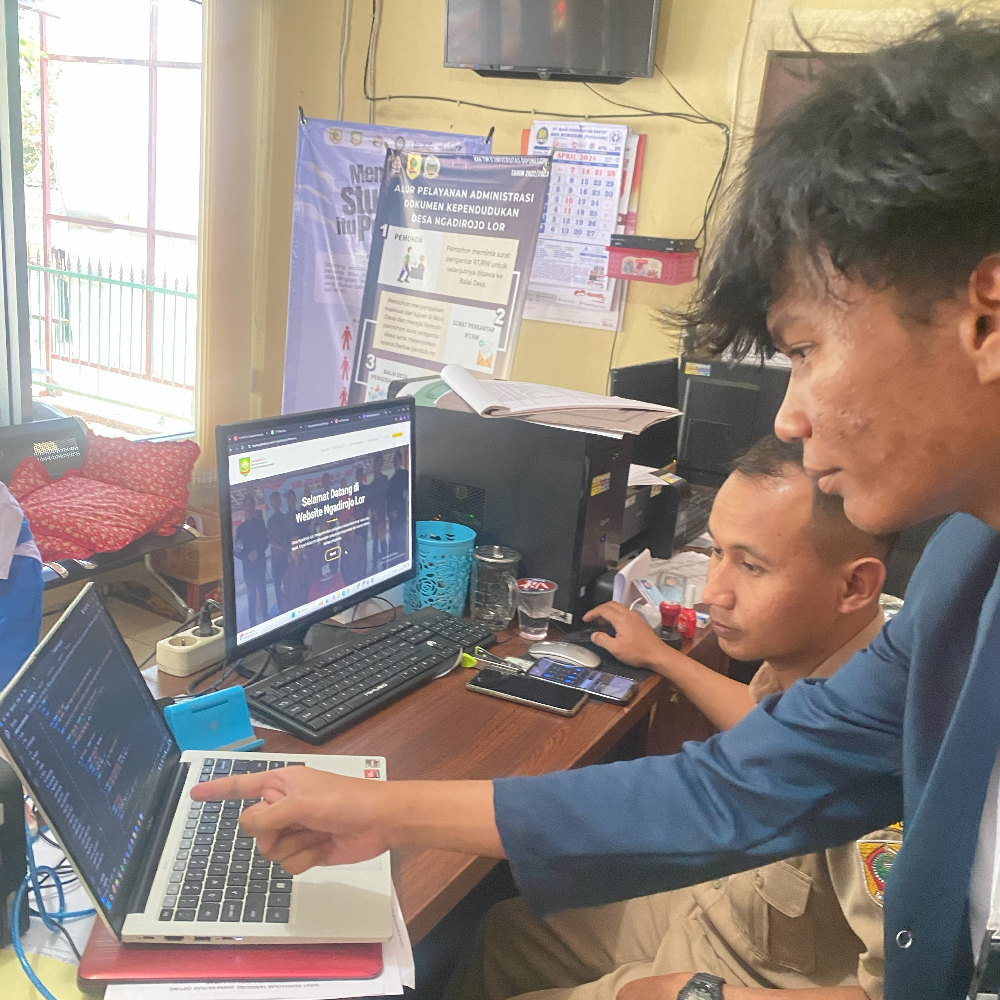

Website Profil Desa Ngadirojo Lor: Pintu Gerbang Informasi dan Layanan Desa
Pada Sabtu, 30 Juli 2024, Ahmad Rizqy Yourin, mahasiswa Teknik Komputer Universitas Diponegoro yang tengah menjalani Kuliah Kerja Nyata (KKN) TIM II 2023/2024 di Desa Ngadirojo Lor, Kecamatan Ngadirojo, Kabupaten Wonogiri, melakukan kunjungan lapangan untuk meninjau kondisi website resmi desa. Kunjungan tersebut dilakukan untuk memahami sejauh mana website desa dapat berfungsi sebagai sumber informasi dan layanan bagi masyarakat setempat maupun pengguna internet yang mencari informasi tentang Desa Ngadirojo Lor.
Hasil dari peninjauan ini menunjukkan bahwa website resmi desa yang seharusnya menjadi pintu utama informasi ternyata tidak memenuhi harapan. Website tersebut tidak dapat diakses melalui perangkat mobile karena tidak adanya integrasi dan kompatibilitas yang memadai antara versi desktop dan mobile. Kondisi ini menjadi masalah serius karena banyak masyarakat yang lebih sering mengakses informasi melalui smartphone mereka daripada menggunakan komputer desktop. Keterbatasan akses ini tentu saja menghambat penyebaran informasi penting terkait profil desa, layanan publik, serta potensi desa kepada masyarakat yang lebih luas.
“Ya, memang sudah ada website desa dari Menkominfo, namun tidak dapat diakses dari smartphone,” ujar Agus ketika diwawancarai
Melihat kondisi ini, Ahmad Rizqy Yourin segera melakukan analisis mendalam untuk mencari solusi yang tepat. Berdasarkan latar belakangnya di bidang Teknik Komputer, Yourin menyadari bahwa solusi paling efektif adalah dengan mengembangkan sebuah website baru yang responsif dan ramah pengguna (user-friendly). Website ini diharapkan dapat diakses dengan baik dari berbagai perangkat, baik itu komputer desktop maupun smartphone, sehingga seluruh masyarakat, baik yang tinggal di desa maupun di luar desa, dapat dengan mudah mengakses informasi yang dibutuhkan.
Yourin kemudian menyusun rencana untuk mengembangkan website desa yang baru. Proses pengembangan ini tidak hanya mencakup aspek teknis seperti desain dan coding, tetapi juga melibatkan edukasi dan pendampingan kepada perangkat desa agar mereka juga dapat terlibat aktif dalam pemeliharaan dan pengelolaan website tersebut. Dalam hal ini, Yourin menjalin kerja sama dengan Agus Tri Wiyanto, S.Kom, yang menjabat sebagai KASI Pelayanan di Desa Ngadirojo Lor. “Ya, memang sudah ada website desa dari Menkominfo, namun tidak dapat diakses dari smartphone,” ujar Agus ketika diwawancarai. Hal ini menegaskan pentingnya inisiatif yang dilakukan oleh Yourin.
Melalui program ini, Ahmad Rizqy Yourin berharap bahwa para perangkat desa tidak hanya menjadi pengguna, tetapi juga bisa memahami proses pembuatan dan pengelolaan website yang baik. Dengan demikian, mereka diharapkan dapat berkontribusi dalam pengembangan dan pembaruan konten website di masa depan.
“Diharapkan program kerja ini dapat membantu para perangkat desa mengenai bagaimana website itu terbuat, yang nantinya mereka juga dapat berkontribusi dalam pembuatan website Desa Ngadirojo Lor sehingga dapat dan mudah diakses oleh masyarakat sekitar melalui desktop maupun smartphone untuk mendapatkan informasi dan layanan Desa,” jelas Yourin.
Program pengembangan website ini diharapkan menjadi model yang bisa diadopsi oleh desa-desa lain, terutama yang menghadapi masalah serupa dalam hal aksesibilitas informasi. Dengan adanya website yang responsif dan informatif, desa-desa di Indonesia dapat meningkatkan transparansi, keterbukaan, dan pelayanan publik secara signifikan, sehingga mendukung pembangunan desa yang lebih inklusif dan berkelanjutan.
Reporter: Ahmad Rizqy Yourin